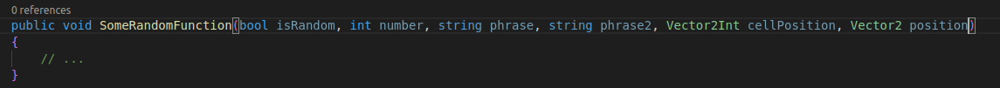

Event Animator
Event Animator is a Unity tool designed for creating dynamic cinematics, meaning that cinematics can change based on various factors, allowing for flexibility in storytelling.
In the video, you can see a small example of its possible usage. The player approaches an area that triggers the cinematic. From this point, the predefined events unfold. What makes this tool interesting is that it's not like a traditional cinematic; it adapts to the player's position and actions. The length of the cinematic can vary based on the player's interactions, such as when the player presses a button to advance the dialogue. This tool is extremely powerful because it allows you to use methods of components directly from the editor, similar to Unity events, but with the advantage of passing any number of arguments of any type. Below, you can see how the method "SomeRandomFunction" from the "TestComponent" on the "MY_OBJECT" object is exposed for use in the Event Animator.


In this video, you can see how the cinematic was created and the values of the keyframes.